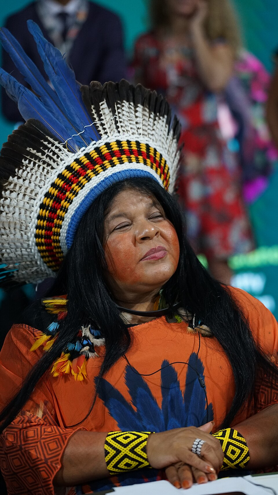
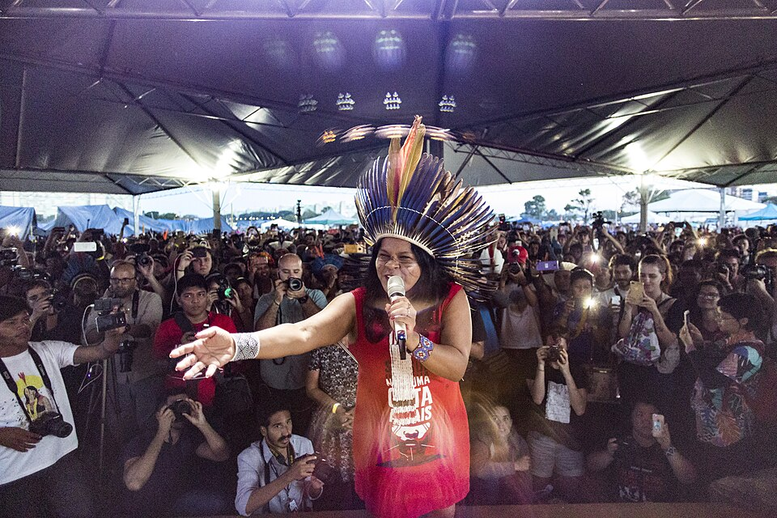
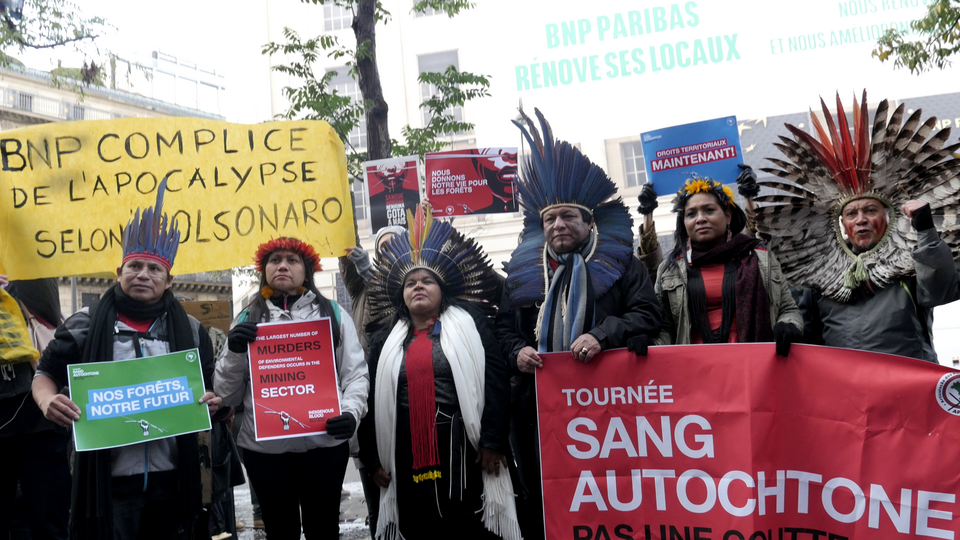
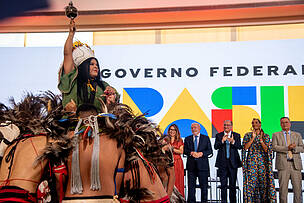

1974
Nasce Sonia Guajajara na Terra Indígena Araribóia, no Maranhão. Cresce inserida nos conhecimentos tradicionais de seu povo, aprendendo desde cedo sobre a importância da floresta e a urgência de sua proteção.

"Para sarar um povo, primeiro precisamos sarar a terra."
Sonia Guajajara
Foto: Waldemir Barreto/Agência Senado, via Wikimedia Commons. Creative Commons Attribution 2.0, 16 abr. 2015.
Trajetória inicial: origens, formação e engajamento ambiental e político

Foto: Xuthoria, “Sônia Guajajara at COP30 in Belém”, via Wikimedia Commons. Creative Commons Attribution-Share Alike 4.0, 17 nov. 2025.
Sonia Guajajara nasceu na Terra Indígena Araribóia, no Maranhão, no seio da comunidade Guajajara, um dos povos indígenas mais importantes do Brasil. Desde criança, cresceu inserida nas tradições, conhecimentos e lutas de seu povo, aprendendo os saberes ancestrais sobre a floresta, a biodiversidade e a relação harmoniosa entre os seres humanos e a natureza. Sua trajetória foi marcada pela dedicação em defender os direitos dos povos indígenas e a preservação da Amazônia contra exploração madeireira, invasões de terras e projetos desenvolvimentistas predatórios. Ao longo de sua vida, Sonia se consolidou como uma das principais lideranças indígenas do Brasil, articulando conhecimentos tradicionais com estratégias modernas de defesa ambiental e territorial.
Sonia Guajajara é conhecida por sua atuação em movimentos indígenas nacionais e internacionais, lutando pela demarcação de terras indígenas, pelo respeito aos direitos humanos dos povos originários e pela urgência da proteção ambiental em escala planetária. Como coordenadora da Articulação dos Povos Indígenas do Brasil (APIB), tornou-se porta-voz de centenas de povos indígenas, elevando suas vozes em fóruns internacionais de mudanças climáticas e direitos humanos. Seu compromisso vai além da luta política — Sonia demonstra como a sabedoria ancestral dos povos indígenas é essencial para a preservação da vida no planeta. Mesmo enfrentando ameaças, criminalizações e perseguições, continua firme em sua missão de proteger a floresta e a vida de seu povo para as gerações futuras.
Nasce Sonia Guajajara na Terra Indígena Araribóia, no Maranhão. Cresce inserida nos conhecimentos tradicionais de seu povo, aprendendo desde cedo sobre a importância da floresta e a urgência de sua proteção.
Sonia começa sua atuação em movimentos indígenas locais e regionais. Participa de mobilizações pela demarcação de terras indígenas e contra projetos de exploração que ameaçam os territórios Guajajara.
Torna-se liderança destacada entre os Guajajara e em movimentos indígenas regionais. Sua atuação ganha visibilidade por sua capacidade de articulação e sua defesa incisiva dos direitos indígenas e da proteção ambiental.
Sonia passa a atuar em nível nacional, participando de conferências e mobilizações que buscam unificar a luta dos povos indígenas brasileiros. Sua voz ganha destaque na defesa da Amazônia.
Participa fundamento na coordenação da Articulação dos Povos Indígenas do Brasil (APIB), organização que reúne centenas de povos indígenas e representa seus interesses em nível nacional e internacional.
Como coordenadora executiva da APIB, Sonia Guajajara coloca os povos indígenas no centro dos debates globais sobre mudanças climáticas, direitos humanos e proteção ambiental. Participa de conferências internacionais e fóruns sobre clima.
É candidata à vice-presidência do Brasil pela coligação de partidos de esquerda, levantando as bandeiras indígenas e ambientais em campanha nacional. Sua candidatura marca um momento histórico de presença indígena na política eleitoral.
Continua em primeira linha na luta pelos povos indígenas, enfrentando ameaças e criminalizações. Participa de conferências climáticas internacionais, denuncia violações de direitos indígenas e mobiliza para a proteção da Amazônia.

Foto: Ricardo Stuckert/PR, via Wikimedia Commons. Creative Commons Attribution 2.0, 26 jan. 2023.
Sonia Guajajara é extraordinária porque elevou a voz dos povos indígenas para o palco global, transformando a luta por direitos indígenas em uma questão central para a sobrevivência do planeta. Em um mundo onde as políticas ambientais frequentemente ignoram o conhecimento ancestral dos povos originários, Sonia demonstra que a sabedoria indígena é não apenas valiosa, mas fundamental para a preservação da vida. Sua capacidade de articular múltiplos povos indígenas em uma luta comum é notável — ela une Guajajara, Yanomami, Guarani, Kayapó e dezenas de outros povos em torno de objetivos compartilhados.
O que torna Sonia ainda mais notável é sua coragem ao enfrentar estruturas de poder extremamente desiguais. Ela defende a floresta contra empresas multinacionais, grileiros e políticos que lucram com a exploração. Mesmo sendo ameaçada, perseguida e tendo seus direitos constantemente violados, mantém-se firme em sua convicção de que a protecção da floresta é proteção da vida. Seu discurso conecta a luta indígena à urgência climática global, mostrando que a sobrevivência dos povos indígenas é essencial para a sobrevivência de toda a humanidade.
Além disso, Sonia desafia stereótipos e preconceitos sobre povos indígenas, provando que são protagonistas de sua própria libertação e não objetos de "proteção" externa. Sua presença em conferências internacionais, sua candidatura presidencial e sua atuação contínua demonstram que os povos indígenas devem estar nos espaços de decisão. Por tudo isso, Sonia não é apenas uma liderança indígena importante, mas uma das vozes mais críticas e necessárias para a transformação social e ambiental do planeta.
Influência sobre políticas ambientais, direitos indígenas e consciência global.
O legado de Sonia Guajajara transcende as lutas de seu tempo — ela está construindo um legado que será fundamental para determinar se o planeta sobreviverá às mudanças climáticas. Primeiro, ela consolidou a Articulação dos Povos Indígenas do Brasil como uma força política unificada capaz de enfrentar Estados e corporações. Essa articulação tornou-se referência global para como povos indígenas podem se organizar para defender seus direitos. Segundo, Sonia elevou o nível de debate sobre as mudanças climáticas, mostrando que não é possível resolver a crise ambiental sem reconhecer os direitos indígenas e a sabedoria dos povos originários. Suas intervenções em conferências climáticas internacionais transformaram o modo como esses temas são discutidos.
Além disso, Sonia demonstra a importância política da liderança feminina indígena, abrindo espaço para que mulheres indígenas ocupem posições de poder e decisão. Sua candidatura presidencial em 2018 marcou um momento histórico ao levar as agendas indígenas para a arena eleitoral nacional. Seu legado também está na defesa da soberania alimentar e territorial dos povos indígenas, mostrando que a floresta em pé é mais valiosa que a floresta destruída. Hoje, Sonia Guajajara continua sendo uma das principais vozes de resistência contra a criminalização de ativistas ambientais, contra o genocídio dos povos indígenas e contra a destruição da Amazônia. Seu trabalho inspira novos movimentos sociais e ambientais globalmente, consolidando-a como símbolo da possibilidade de transformação através da luta coletiva, da sabedoria ancestral e do compromisso com as gerações futuras.
Fotos, documentos e registros históricos.

Sônia Guajajara participa do 15º Acampamento Terra Livre, representando a mobilização dos povos indígenas em defesa da demarcação de terras, da proteção dos territórios e dos direitos dos povos originários no Brasil.
Foto: Apib Comunicação/Mídia Ninja, via Wikimedia Commons. Creative Commons Attribution-Share Alike 2.0, 24 abr. 2019.

Sonia Guajajara participa, ao lado de lideranças da APIB, de protesto em Paris durante a turnê “Sangue Indígena: Nenhuma Gota a Mais”, denunciando violações ambientais e defendendo internacionalmente os direitos territoriais dos povos originários brasileiros.
Foto: Gert-Peter BRUCH, via Wikimedia Commons. Creative Commons Attribution-Share Alike 4.0, 12 nov. 2019

Sônia Guajajara assume o Ministério dos Povos Indígenas, tornando-se a primeira mulher indígena a comandar um ministério no Brasil e simbolizando um marco histórico na luta por direitos, território, democracia e justiça climática para os povos originários.
Foto: Jacqueline Lisboa / WWF-Brasil.
Livros, artigos e documentos históricos.
Fonte para nome civil, nascimento, naturalidade, formação, mandato parlamentar, licença para o ministério e reassunção em 2026. Link: https://www.camara.leg.br/deputados/220643/biografia
Balanço da gestão de Sonia Guajajara no Ministério dos Povos Indígenas e perfil de sua trajetória como liderança indígena. Link: https://www.gov.br/povosindigenas/pt-br/assuntos/noticias/2026/03/apos-tres-anos-ministra-sonia-guajajara-deixa-ministerio-dos-povos-indigenas-com-legado-de-entregas-historicas-a-frente-da-pasta
Registra a transmissão do cargo e o encerramento da gestão de Sonia Guajajara no MPI em março de 2026. Link: https://www.gov.br/povosindigenas/pt-br/assuntos/noticias/2026/04/em-ato-na-esplanada-sonia-guajajara-transmite-cargo-a-eloy-terena
Registra a posse de Sonia Guajajara no Ministério dos Povos Indígenas e o contexto de criação da pasta. Link: https://www.gov.br/povosindigenas/pt-br/assuntos/noticias/2023/01/sonia-guajajara-e-empossada-ministra-de-estado-dos-povos-indigenas-do-brasil
Fonte para formação, atuação na APIB, participação na chapa presidencial de 2018 e posicionamento contra o marco temporal. Link: https://apiboficial.org/2021/10/05/indigenas-nao-vao-abrir-mao-de-territorios-se-marco-temporal-passar-diz-sonia-guajajara/
Perfil do PNUMA sobre Sonia Guajajara como laureada Champions of the Earth por liderança política ambiental. Link: https://www.unep.org/championsofearth/laureates/2024/sonia-guajajara
Reconhecimento de Sonia Guajajara como uma das 100 pessoas mais influentes do mundo em 2022. Link: https://time.com/collections/100-most-influential-people-2022/6177858/sonia-guajajara/
Registra a concessão do título de Doutora Honoris Causa pela UERJ e resume sua formação e atuação socioambiental. Link: https://www.uerj.br/agenda/entrega-do-titulo-de-doutora-honoris-causa-a-sonia-guajajara/
Conheça outras trajetórias marcantes da luta por justiça e transformação social.

Foto: John Mathew Smith / www.celebrity-photos.com, via Wikimedia Commons.
Simbolo da luta contra a segregação racial nos Estados Unidos e referência mundial em coragem civil.
Saiba mais
Imagem: representação de Bartolina Sisa em cédula boliviana — via Banco Central da Bolívia.
Estrategista quilombola cuja resistência ajudou a marcar a luta negra por liberdade no Brasil lorem.
Saiba mais
Imagem: representação de Bartolina Sisa em cédula boliviana — via Banco Central da Bolívia.
Intelectual fundamental para os debates sobre feminismo negro, cultura e desigualdade racial no Brasil.
Saiba mais
Imagem: representação de Bartolina Sisa em cédula boliviana — via Banco Central da Bolívia.
Liderença indigêna e jurista que ampliou a presença dos povos originários nos espaços de decisão.
Saiba mais